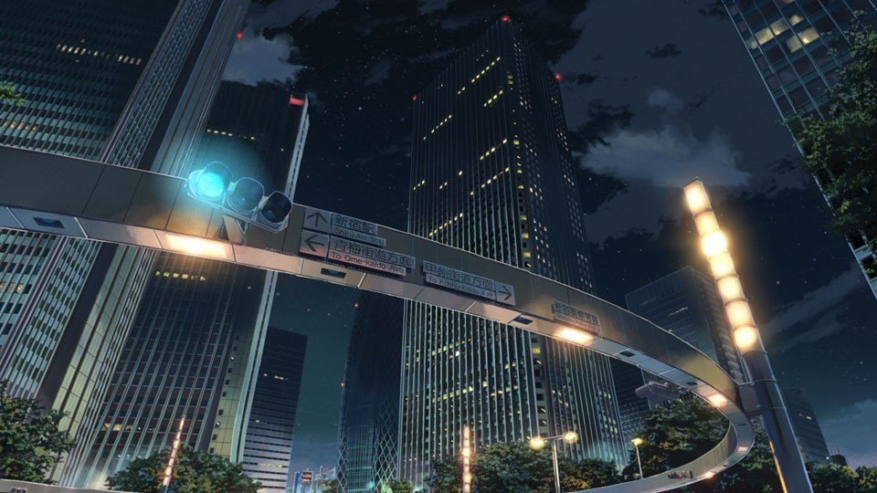
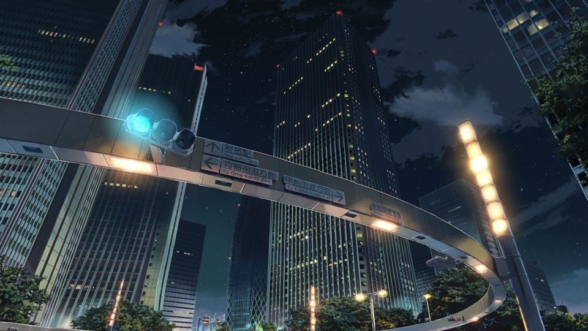
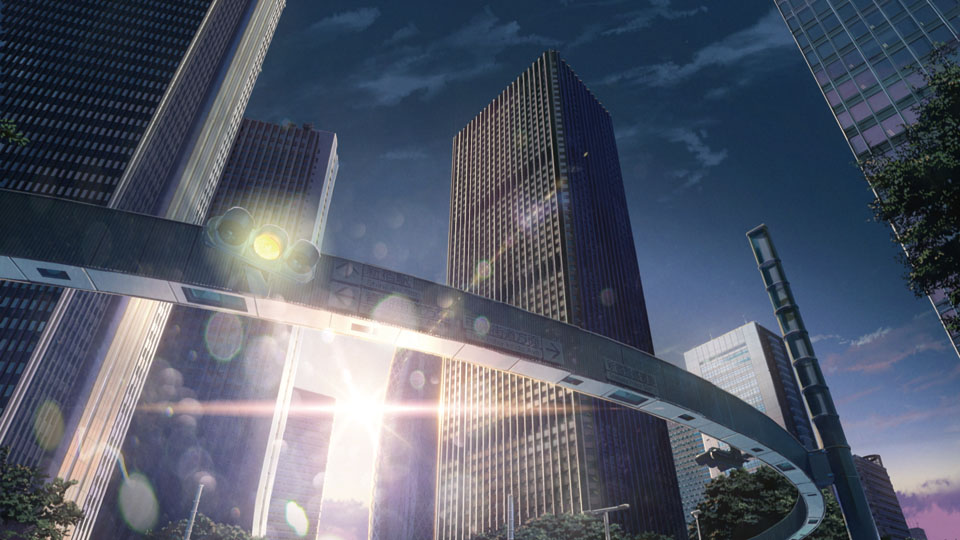
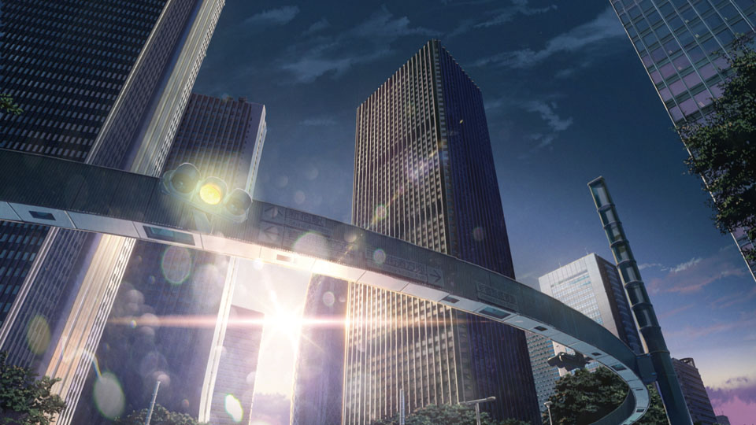

Your Name (Japanese: 君の名は。, Hepburn: Kimi no Na wa.) is a 2016 Japanese animated romantic fantasy film produced by CoMix Wave Films and released by Toho. It depicts a high school boy in Tokyo and a high school girl in the Japanese countryside who suddenly and inexplicably begin to swap bodies.
The film was commissioned in 2014, written and directed by Makoto Shinkai. It features the voices of Ryunosuke Kamiki and Mone Kamishiraishi, with animation direction by Masashi Ando, character design by Masayoshi Tanaka, and its orchestral score and soundtrack composed by Radwimps. A light novel of the same name, also written by Shinkai, was published a month prior to the film's premiere.
Your Name premiered at the 2016 Anime Expo in Los Angeles on July 3, 2016, and was theatrically released in Japan on August 26, 2016, and in the United States on April 7, 2017. It was critically acclaimed, with praise for the animation, music, and emotional weight. The film grossed over ¥41.44 billion (US$380.15 million) worldwide, becoming the highest grossing Japanese film of 2016, and the third highest-grossing anime film of all time, unadjusted for inflation.
The film won Best Animated Feature Film at 49th Sitges Film Festival, the 2016 Los Angeles Film Critics Association Awards, and the 71st Mainichi Film Awards, and was nominated for Best Animation of the Year at the 40th Japan Academy Prize. A live-action remake by Paramount Pictures set in the United States is currently in development.
In 2013, Mitsuha Miyamizu is a high school girl living in the rural town of Itomori, Japan. Bored of the town, she wishes to be a Tokyo boy in her next life. One day, she inexplicably begins to switch bodies intermittently with Taki Tachibana, a high school boy in Tokyo: thus when they wake up as each other on some mornings, they must live through the other's respective activities and social interactions for the day. They learn they can communicate with each other by leaving messages on paper, phones, and sometimes on each other's skin. Mitsuha (in Taki's body) sets Taki up on a date with coworker Miki Okudera, while Taki (in Mitsuha's body) causes Mitsuha to become popular at school. One day, Taki (in Mitsuha's body) accompanies Mitsuha's grandmother Hitoha and younger sister Yotsuha to leave the ritual alcohol kuchikamizake, made by the sisters, as an offering at the Shinto shrine located on a mountaintop outside the town. It is believed to represent the body of the village guardian god ruling over human connections and time. Taki reads a note from Mitsuha about the comet Tiamat, expected to pass nearest to Earth on the day of the autumn festival. The next day, Taki wakes up in his body and goes on a date with Miki, who tells him she enjoyed the date but also that she can tell he is preoccupied with thoughts of someone else. Taki attempts to call Mitsuha on the phone, but cannot reach her as the body-switching ends.
Taki, Miki, and their friend Tsukasa travel to Gifu by train on a trip to Hida in search of Mitsuha, though Taki does not know the name of Itomori, relying on his sketches of the surrounding landscape from memory. A restaurant owner in Hida recognizes the town in the sketch, being originally from there. He takes Taki and his friends to the ruins of Itomori, which has been destroyed and where 500 residents were killed when Tiamat unexpectedly fragmented as it passed by Earth three years earlier. Taki observes Mitsuha's messages disappear from his phone and his memories of her begin to gradually fade, realizing the two were also separated by time, as he is in 2016. Taki finds Mitsuha's name in the record of fatalities. While Miki and Tsukasa return to Tokyo, Taki journeys to the shrine, hoping to reconnect with Mitsuha and warn her about Tiamat. There, Taki drinks Mitsuha's kuchikamizake then lapses into a vision, where he glimpses Mitsuha's past. He also recalls that he encountered Mitsuha on a train when she came to Tokyo the day before the event to find him, though Taki did not recognize her as the body-switching was yet to occur in his timeframe. Before leaving the train in embarrassment, Mitsuha had handed him her hair ribbon, which he has since worn on his wrist as a good-luck charm.

 


 
